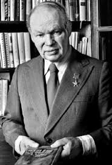

Біографія Михайла Стельмаха
Михайло Панасович Стельмах — український письменник, драматург, фольклорист. Член Спілки письменників УРСР, академік АН УРСР (з 29 березня 1978 року), Герой Соціалістичної Праці.
Народився 11 (24 травня) 1912 року в селі Дяківцях (тепер Літинського району Вінницької області) у родині селянина, ветерана російсько-японської війни Панаса Стельмаха. Мати — білоруска. У 1933 році закінчив літературний факультет Вінницького педагогічного інституту (першим у селі отримав вищу освіту) і до 1939 вчителював у селах Київщини; 1939 року мобілізований до Червоної армії, учасник німецько-радянської війни. Як солдат-артилерист воював у Білорусі, був двічі поранений. З 1944 працював у редакції газети 1-го Українського фронту «За честь Родины». Під час війни уВоронежі та Уфі вийшли під редакцією М. Рильського дві збірки фронтових віршів Михайла Стельмаха: «Провесінь», «За ясні зорі» (1942); в 1943році — в Уфі надрукована книжка оповідань «Березовий сік» під редакцією Юрія Яновського.
Після війни, на запрошення поета Максима Рильського, став співробітником Інституту фольклору, етнографії та мистецтва АН УРСР (1945–1953 роки). Обирався депутатом Верховної Ради СРСР 6—9 скликань, був заступником голови Ради Національностей.
Родина
Сини:
- Ярослав Стельмах — дитячий письменник, драматург, автор вистави «Синій автомобіль»;
- Дмитро Стельмах — перекладач, письменник.
Донька:
- Марта Стельмах-філолог,фольклорист,дизайнер ландшафту.
Творчість
Творив у жанрі соцреалізму. Писав вірші, але починаючи з 1940-их працює у прозовому жанрі. Автор поетичних книжок для дітей. Одним із перших у післявоєнній художній літературі порушив проблему Голоду 1932–1933 років та боротьби ОУН-УПА проти СРСР.
Як поет друкується з 1936. У 1941 з’явилася перша поетична збірка «Добрий ранок». У роки війни вийшли збірки «За ясні зорі», «Провесінь». Поезію Стельмаха відзначає глибокий ліризм, пісенність, емоційність, вплив фольклору, багатогранність тематики.
Проза Стельмах — типовий зразок літератури соцреалізму, з властивим йому кожночасним пристосуванням до партійної лінії (наприклад, роман «Велика рідня», перейнятий духом ґлорифікації Сталіна і відзначений сталінською нагородою 1951, Стельмах переробив відповідно до критики «культу особи» і 1957 перевидав під назвою «Кров людська — не водиця») і так званого «прикрашення» радянської дійсності, від якого не вільні твори Стельмаха посталінської доби.
Проте спроба написати твір про післявоєнну Галичину, війну ОУН-УПА на рідному Поділлі, наштовхується на опір цензури. Доктор істор. наук В. Сергійчук пише:
Михайло Стельмах написав би правдиво про ОУН-УПА. Він навіть пробував зробити це свого часу, бодай і в жорстких рамках ідеологічного завдання партії. Але йому не дали можливості сказати хоч частинку правди про ОУН-УПА. В цьому може переконатися … , коли ознайомиться з доповідною начальника Головліту УССР К. Полонника секретареві ЦК КП(б)У І. Назаренку від 2.10.1952 р.:
«Доповідаю, що Головліт УССР не дозволив до видання й повернув видавництву «Радянський письменник» на переробку повість Михайла Стельмаха „Над Черемошем”.
Поставивши своєю метою показати процес колективізації в селах станиславської Верховини в 1948-1950 р.р., який відбувався в умовах куркульського спротиву, Михайло Стельмах не зумів надати цьому спротиву яскраво вираженого класового характеру. Замість приречених куркулів, у Стельмаха діють озброєні найновішою автоматичною зброєю буржуазні націоналісти, т. зв. бандерівці, які мають свою розгалужену організацію, свій керівний центр, свою «Українську головну військову раду», яка навіть чеканить і нагороджує своїх головорізів, що відзначилися, орденами і медалями — на зразок медалі „3а боротьбу в особливо важких умовах”.
Сам цього, можливо, не бажаючи, автор надав націоналістичному підпіллю характер великої і грізної сили, здатної тримати в страху населення і представників радянської влади на значній території, що політично нам не тільки не бажано, але й дуже шкідливо»
Роман «Правда і кривда» викликав першу політичну дискусію в українському середовищі після погромів 1930-их років. Зокрема, там є такі зухвалі слова: «Ми найстрашнішого ворога — фашизм — вже закопуємо у могилу, а цей ворог ще поміж нас ходить». Не дарма критик Іван Світличний відзначив, що Стельмах уперше:
“прямо і відверто, без різного звичайного в таких випадках словесного туману, пише і про сирітські драми, і про занедбаність чи й зовсім відсутність демократії в колгоспах, і про податкові утиски, і про найбільше зло нашого часу – бюрократію, і про багато інших прикрих, але, на жаль, реальних речей, про які інші говорять пошепки і з оглядками.”
Ще одна заслуга Стельмах — перша публічна розмова про факт «незрозумілого» голоду 1932-33 в Україні у глухі брежнєвські часи. У творі «Чотири броди» (1978) Стельмах примушує українське суспільство згадати про жертв Голодомору, вказує на відвертих колаборантів (Магазник), які брали участь в організації штучного голоду на селі. Разом з романом «Правда і кривда», творчість Стельмах у 1960-70-их рр. схарактеризована критиками як «політична»! (Леонід Новиченко, 1988). А ще Стельмах був фронтовиком і особисто сміливою людиною. Мабуть тільки він міг написати 1973 некролог у київській пресі пам’яті українського поета, в’язня ГУЛАГ СРСР Олеся Журбу.
Винятково багата народною лексикою, специфічним гумором, проза Стельмаха стилево споріднена з ліризованою прозою Михайла Коцюбинського, Юрія Яновського, з особливо виразно помітними впливами Олександра Довженка. Одначе, згадані вже негативні прикмети, обумовлені жанровим терором, застосовуваним щодо підневільних українських літераторів. Проте виразний нахил до сентименталізму (теж властивого тій методі), щоправда, забезпечують Стельмах одне з провідних місць в літературній ієрархії УРСР. На думку де-яких сучасних критиків, загалом творчість Стельмах органічно фальшива і тим самим позбавлена справжньої мистецької вартості. Тим не менше, твори Стельмах й надалі перебувають у шкільних програмах з літ-ри в загальноосвітніх школах України, а на Поділлі Стельмах відносять до ключових літературних постатей краю ХХ ст.